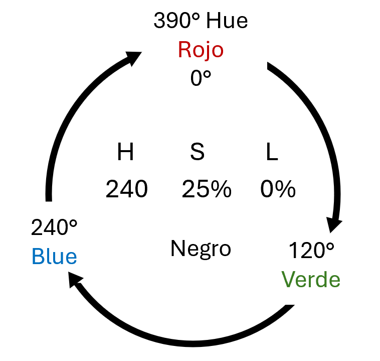
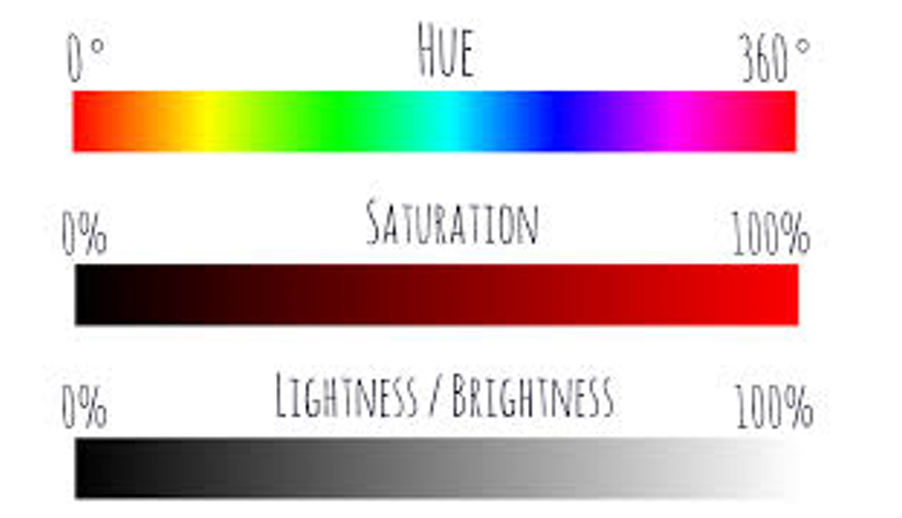
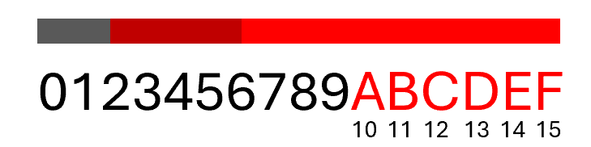
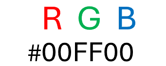
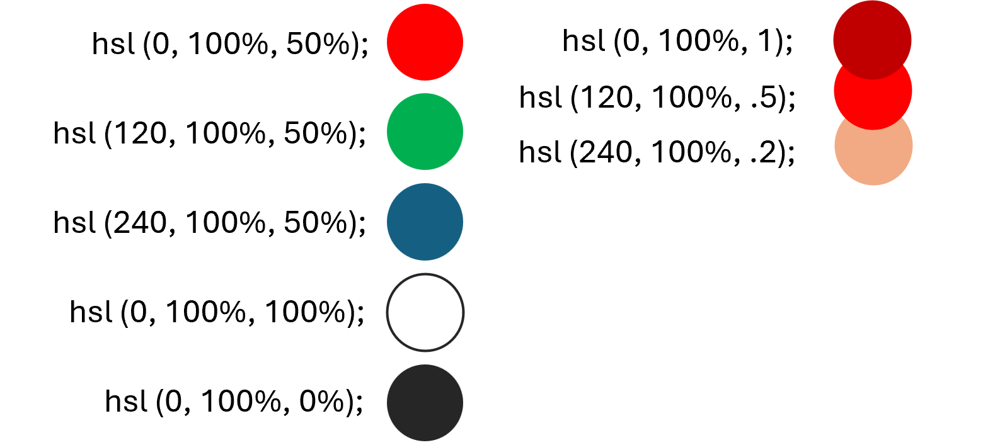

HEADER
IDEAS GENERALES
Es una de las partes mas importantes de una pagina web, pues es el elemento que los usuarios visualizan en primer lugar cunado llegan al proyecto. Por lo tanto, la cabecera de la web debe ser ordenada y limpia para que pueda ser visualizada y no de lugar a confusión. Debemos tener en cuenta que el header es un especio genérico que tendrá el mismo diseño en todas las paginas de un sitio web.
Primero se debe hacer un listado con los elementos que vas a incluir en el header de tu web de forma obligatoria, ya sea por motivos branding, navegación u otros.
- Logotipo: No puede faltar, sirve como guía vidual para el usuario, permite reforzar la imagen de la marca. Se suele enlazar con la pagina de inicio, se puede ubicar al inicio o a la mitad de la cabecera.
- Nav (menu): Permite al usuario la navegación entre las distintas secciones, puede ser también agregado al header. Se puede colocar un solo menú o dos, siempre en función del proyecto y de su estructura, si el proyecto tiene muchas secciones posiblemente necesite un menú doble pero es mejor evitarlo lo más posible. Si el proyecto tiene una gran estructura o muchas categorías si es necesario el doble menú.
- Buscador: Puede estar en el header, es por cuestión de usabilidad, para un usuario que entra por primera vez le es completamente útil. Algunas de sus opciones de diseño son: icono de lupa, barra buscadora, al lado del menú, debajo del logo, suele estar en la mayoría de los casos a derecho superior.
- Datos de contacto: Los datos que se pueden incluir en la cabecera son el teléfono o email. No se deben incluir demasiado datos de contacto, solo los necesarios. La dirección suele ocupar demasiado espacio en mejor incluirla en el footer.
- Redes sociales: Son un canal complementario para comunicar el mensaje de la marca o negocio, por no el principal, que siempre debe ser la web. Su objetivo es amplificar el mensaje para convertirlo en trafico hacia la web, no al contrario. El usuario no debería de ir directamente a la red social al entrar a la web.
- Tienda Online: Debe de incluirse en el header los elementos referentes al proceso de compra: carritos, cuenta, pedido, lista de deseos, incio de sesión, etc. Es mas importante que un usuario realice una compra en la web que un like en Instagram.
- Botones destacados: Puede incluirse nen la cabecera de la web, son botones destacados para enfatizar un servicio, llevar al usuario a una landing o animarle a que haga una acción especifica: pedir presupuesto, pedir información, Hacer una reservación.
- Selector de idioma / país: Si el proyecto es multi lenguaje es obligatorio en el header un selector de idioma. (NOTA: nos dará el doble de dinero).
- Formulario de suscripción: Puede ser incluido en el header, aunque no es recomendado por el espacio que ocupa. Se pueden colocar en otras partes de la web como el footer.
APUNTES
Es una de las partes mas importantes de una pagina web, pues es el elemento que los usuarios visualizan en primer lugar cunado llegan al proyecto. Por lo tanto, la cabecera de la web debe ser ordenada y limpia para que pueda ser visualizada y no de lugar a confusión.
Debemos tener en cuenta que el header es un especio genérico que tendrá el mismo diseño en todas las paginas de un sitio web.Primero se debe hacer un listado con los elementos que vas a incluir en el header de tu web de forma obligatoria, ya sea por motivos branding, navegación u otros.
¿Qué elementos se deben incluir en el header? Los elementos que pueden formar parte del header, van a depender de los objetivos del tipo web. Logotipo, menú, buscador, datos de contacto, redes sociales, carrito de compras, botones destacados, selector de idioma o país, formulario de suscripción, etc.
RESUMEN
Es un elemento muy importante al recibir practicamente a el usuario, es importante presentar una estetica agradable a la vista.
FOOTER
IDEAS GENERALES
La propiedad display define cómo se debe mostrar un elemento en la página web, afectando su comportamiento y disposición dentro del documento, controla la disposición de los elementos en la página y establecer cómo interactúan con los demás.
- Textos legales: Son elementos obligatorios en el footer, no hay lugar para interpretaciones. La privacidad de los usuarios que visitan la web es un tema muy serio y demás es obligatoria. Solo hay dos alternativas: Tener avisos legales o ser infractor de la ley. Los textos legales obligatorios son dos: la política de privacidad y el aviso legal. Complementarios: limite de responsabilidad, las condiciones de uso, la política de transparencia o de calidad.
- Cookies: Es uno de los textos legales obligatorios en todo sitio web. Sebe aparecer en forma de barra o mensaje, aunque se puede mostrar en otras partes de la web incluso como pop-up, es recomendable colocar en el footer, para que así el usuario quelas acepte o rechace ya que es un lugar discreto.
- Redes sociales: Es recomendable colocar en el footer y no en el header. Permite una vía de contacto directa entre la marca y las visitas de la web que se pueden convertir en seguidores. Se puede añadir los botones de cada plataforma o utilizar widgets para mostrar las ultimas publicaciones.
- Copyright / créditos: Recomendable colocar en el footer, créditos del diseñador, los autores del material grafico como fotos, ilustraciones o videos, instrucciones u=que colaboran con el proyecto si es el caso.
- Datos de contacto: Son una información muy útil para que las visitas se pongan en contacto con la empresa o negocio. Se pueden incluir datos como el teléfono, email, dirección, se puede incrustar un mapa de google maps también.
- Sellos de confianza: En webs de sectores tecnológicos, sanitario, comercio o industrial es común encontrar sellos de confianza que avalan la actividad y profesionalidad de dicha empresa. Es un distintivo que otorga la Asociación de Internet MX a sitios web que pertenecen a empresas, organizaciones, instituciones, personas identificadas y comprometidas con la generación de confianza en línea.
- CTA: Call To Action es una imagen o un texto que invita a los visitantes de una pagina web a realizas una acción. Hace referencia a cuando queremos impactar de algún modo a una visitante para que realice una acción que nos interesa.
- Sitempa: Son archivos en los que se proporciona información sobre las páginas, los videos y otros archivos del sitio, así como sobre las relaciones que hay entre ellos. Los buscadores como Google leen estos archivos para rastrear los sitios de forma mas efectiva. Los sistemas informan que archivos de un sitio son importantes para el autor e incluye datos importantes sobre ellos.
- Formularios de suscripción o newsletter: Ubicado en cualquier pagina de un sitio web o blog donde los usuarios pueden complementar los campos con sus datos para recibir correos electrónicos sobre temas relacionados con sus intereses. Su objetivo principal es atraer nuevos suscriptores a tu lista de correo.
APUNTES
Footer / Pie de página es una sección muy útil y efectiva si es bien diseñada, es un espacio genérico que sele tener el mismo diseño en todas la paginas de un sitio web. Planificar cada de los elementos que se van a incluir en el footer es parte del proceso de diseño de un proyecto web. Así se establecen los elementos que se van amostrar en función de los objetivos de la estrategia de marketing.
RESUMEN
Presenta principalmente toda la informacion legal de la pagina, tambien se le puede incluir redes sociales y datos de contacto.
COLORES
IDEAS GENERALES
Cuando se crea un sitio web, la elección de los colores es una tarea delicada, a pesar de parecer fácil. Seleccionar una paleta de colores correcta es importante para comunicar eficazmente el mensaje. Todos sabemos que los colores producen sensaciones que la mente humana interpreta. A pesar de que no somos muy consientes de esto cuando visitamos un sitio web, los colores son un factor fundamentan a la hora de determinar si nos quedamos o nos vamos. Aunque no hay reglas absolutas, tener en cuenta algunas pautas pueden ayudarnos a encontrar un diseño armónico. Identificar el publico objetivo de tu página web, la mayoría de los colores están asociados a determinados grupos.
La pagina tiene ante todo que atraer y convencer a la vista. Es por eso que hay que seleccionar colores con los que la visita se sienta identificada. Una de las propiedades de los colores es la de transmitirsensaciones. Los colores estimulan nuestro cerebro y evocan muchas emociones y sensaciones como tranquilidad, seguridad, confianza, pasión, misterio, etc. Debemos tener cuidado porque muchas de esas asociaciones tienen un fundamento cultural, por ejemplo: negro = muerte.


APUNTES
La armonía de colores y el equilibrio hacen que un proyecto sea mas o menos efectivo. Por lo general se recomiendan respetar una de estas tres reglas.
- Colores de la misma gama cromática: aquellos situados próximos en la gama cromática.
- Colores complementarios: aquellos situados en el lado opuesto de la gama cromática y que ayudan al contraste.
- Colores opuestos: aquellos situados justo en el lado opuesto de la gama cromática y que se ayudan al contraste
Otra de las recomendaciones es no abusar de los colores, dos o tres es suficiente y siempre es bueno que haya un color predominante. Se debe elegir una paleta de colores y usarla en todo el sitio, de esta manera se le da uniformidad y sentido de unidad al sitio web. No se debe usar demasiados colores diferentes, con dos o tres es suficiente. Todo el resto debería estar en la gama de estos colores principales.



RESUMEN
Los colores se leen mediante numeros y letras, dependiendo del tipo de lectura su orden es distinto.
EXPECIFICIDAD / ESPECIALIDAD CSS
IDEAS GENERALES
La especificidad es el medio por el cual los navegadores deciden que valores de propiedades CSS son los mas relevantes para un elemento y por lo tanto se aplicaran.
Jerarquía d especialidad. Cada selector tiene su lugar en la jerarquía de especificidad. Hay cuatro categorías que definen el nivel de especificidad de un selector.
- Estilo en línea: se adjunta directamente al elemento que se va a diseñar (h1, style = “color: #0000 ”,)
- Id: Es un identificador único para los elementos de la pagina (id = cuadroazul, #cuadroazul)
- Clases, atributos y pseudocodigosclase: Clases, atributos y pseudo-clses (hover:, focus)
APUNTES
En CSS, las propiedades personalizadas (también conocidas como variables) son entidades definidas por autores de CSS que contienen valores específicos que se pueden volver a utilizar en un documento.
RESUMEN
Es la jerarquia de los elementos, unos tiene mayor importancia que otros por lo que su lectura es prioritaria a la hora de ejecutar un codigo.
TABLAS
IDEAS GENERALES
- thead – Encabezado de la tabla.
- th – Celda del encabezado de la tabla.
- tbody – Cuerpo de la tabla.
- tr – renglón de la tabla.
- td – celdas de datos.
- caption – usado para insertar captions.
- Tfoot – footer de la tabla.
APUNTES
La realizacion de uhna tabla no es copleja, su modificacion si, hay que tener bien ubicada cada una de las casillas cuando querramos modificarlas.
RESUMEN
Las tablas son simples siempre y cuando sepamos programarlas bien.
FORMULARIOS
IDEAS GENERALES
- Form – Define un formulario que se utilizara pare recopilar información que el usuario escribe, puede ser mostrado de forma diferente dependiendo el atributo type..
- Input – Es el mas importante en el formulario, puede ser mostrado de forma diferente dependiendo el atributo type.
- Fieldset -Se usa para agrupar datos en formularios.
- Legende – Define un titulo para el elemento fieldset.
APUNTES
Son mas tediosos que complejos, ocupan etiquetas y cosas extras, tambien ocupan un archivo php.
RESUMEN
Los formularios son sumamente utiles para recopilar la informacion de los usuarios.